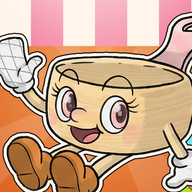
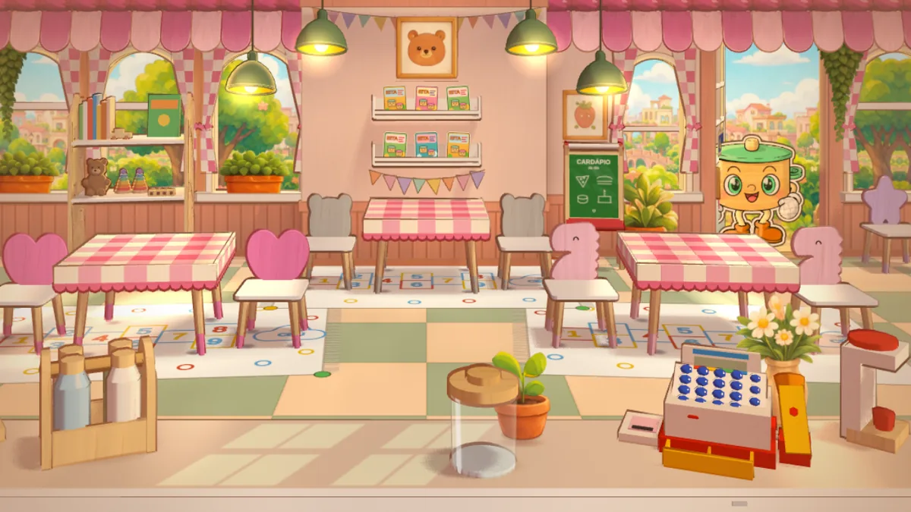
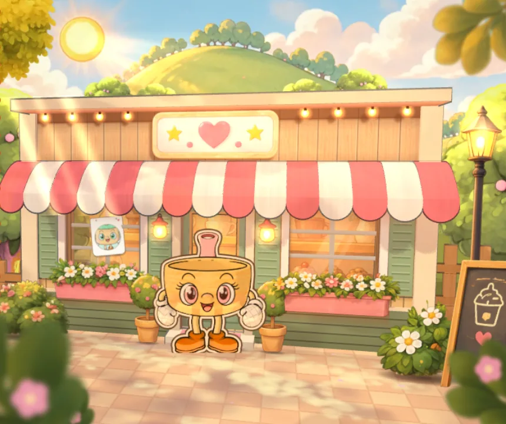
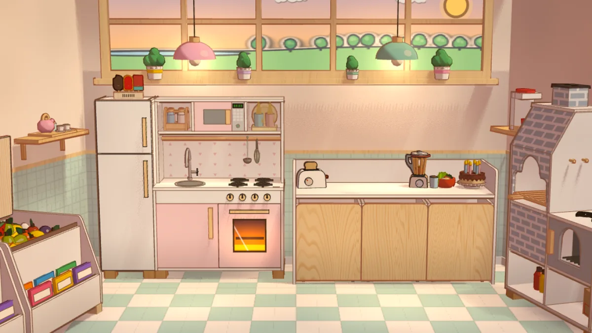
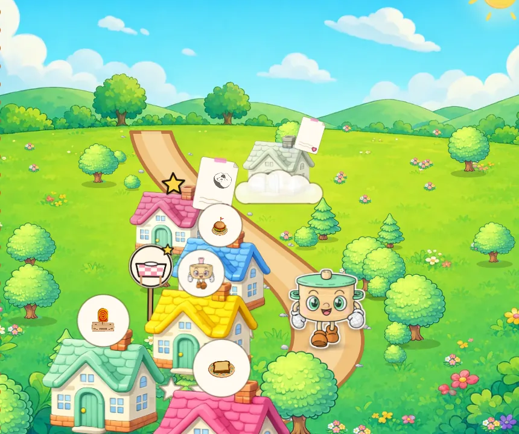

Windows
Windows 10 e 11
Na primeira vezSe aparecer “O Windows protegeu o computador”, clique em Mais informações e depois em Executar assim mesmo.

O jogo da Turma da Eita
A turma abriu uma lanchonete! Faça as receitinhas do livro, sirva os amigos que chegam e prepare o Grande Almoço Especial.
Baixar o jogoPara Windows, Mac, Linux e Android. No iPhone, joga pelo Safari.

Depois de instalado, o jogo funciona sem internet.
Windows 10 e 11
Na primeira vezSe aparecer “O Windows protegeu o computador”, clique em Mais informações e depois em Executar assim mesmo.
Intel e Apple Silicon
Na primeira vezAbra o arquivo e arraste a Turma da Eita para Aplicativos. Se o Mac não deixar abrir, vá em Ajustes do Sistema › Privacidade e Segurança e clique em Abrir Mesmo Assim.
AppImage ou .tar.gz
Na primeira vezMarque o AppImage como executável e abra. No Fedora, instale antes o fuse-libs. O .tar.gz não pede nada: descompacte e abra o turma-da-eita.
Celular e tablet
Na primeira vezAbra o arquivo baixado. O celular pergunta se pode instalar apps vindos do navegador: permita e toque em Instalar. Se ele disser que o app está em conflito, desinstale a versão antiga e instale de novo.
Pelo Safari
Como instalarAinda não está na App Store. No Safari, toque em Compartilhar e em Adicionar à Tela de Início: o jogo ganha o ícone e abre em tela cheia.
Sem baixar nada
Bom saberFunciona no Chrome, no Edge, no Safari e no Firefox, no computador e no tablet. O progresso fica guardado no próprio navegador.


